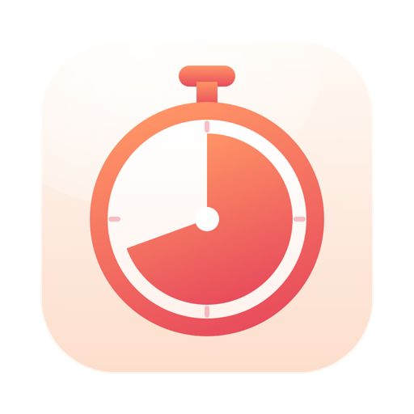

Tockette
Hẹn giờ, chỉ một cú kéo từ thanh menu.
Tockette làm gì
Tockette nằm trên thanh menu dưới dạng một mặt đồng hồ nhỏ. Kéo xuống từ đó rồi thả ra để bắt đầu hẹn giờ: kéo một chút cho vài phút, kéo xa hơn cho tới bốn tiếng. Hoặc bấm vào và gõ thứ bạn muốn.
- Một cú kéo: bong bóng cạnh con trỏ cho biết thời lượng và lúc kết thúc. Thả ra là hẹn giờ chạy.
- Hoặc gõ vào: 25 trà, 1h30 gọi điện, 90s luộc trứng. Gõ một giờ cụ thể thì thành báo thức: 17:00, 9:30 họp sáng.
- Bao nhiêu cũng được, mỗi hẹn giờ có tên riêng, nút tạm dừng, thêm một phút và hủy. Mặt đồng hồ vơi dần theo hẹn giờ sắp xong nhất.
- Khó mà bỏ lỡ: khi hết giờ, một tấm thẻ trượt xuống từ thanh menu kèm tiếng chuông, với các nút Xong, Báo lại và Lần nữa. Một thông báo có cùng các nút đến được với bạn cả khi Mac đang khóa.
- Bắt đầu nhanh: một cú nhấp cho các thời lượng quen dùng, và các hẹn giờ có tên bạn đặt gần đây.
Cần macOS 14 Sonoma trở lên.
Quyền riêng tư, gói gọn một đoạn
Tockette không truy cập mạng, không cần tài khoản và không theo dõi. Các hẹn giờ và tên của chúng chỉ nằm trên Mac của bạn. Bản chính sách quyền riêng tư đầy đủ cũng nói đúng như vậy, chỉ chi tiết hơn.
Các ứng dụng khác của cùng nhà phát triển
Những ứng dụng nhỏ, mỗi ứng dụng làm tốt một việc. Không tài khoản, không quảng cáo, và không ứng dụng nào theo dõi bạn.
 StatuetteCPU, bộ nhớ, ổ đĩa và mạng ngay trên thanh menu.Mac
StatuetteCPU, bộ nhớ, ổ đĩa và mạng ngay trên thanh menu.Mac ZonetteMọi múi giờ bạn quan tâm, chỉ một cú nhấp.MaciPhone & iPadAndroid
ZonetteMọi múi giờ bạn quan tâm, chỉ một cú nhấp.MaciPhone & iPadAndroid LunetteMặt Trăng và Mặt Trời, chỉ trong một cái nhìn.MaciPhone & iPadAndroid
LunetteMặt Trăng và Mặt Trời, chỉ trong một cái nhìn.MaciPhone & iPadAndroid LunaretteÂm lịch, theo bốn truyền thống.MaciPhone & iPadAndroid
LunaretteÂm lịch, theo bốn truyền thống.MaciPhone & iPadAndroid PausetteNhững quãng nghỉ nhẹ nhàng cho mắt và lưng.Mac
PausetteNhững quãng nghỉ nhẹ nhàng cho mắt và lưng.Mac PoisetteNgồi thẳng lưng, có AirPods bạn đang đeo nhắc nhở.MaciPhone & iPad
PoisetteNgồi thẳng lưng, có AirPods bạn đang đeo nhắc nhở.MaciPhone & iPad HushetteÂm thanh nền êm dịu, không bao giờ lặp lại.MaciPhone & iPadAndroid
HushetteÂm thanh nền êm dịu, không bao giờ lặp lại.MaciPhone & iPadAndroid TapsodyTiếng bàn phím cơ mỗi khi bạn gõ.Mac
TapsodyTiếng bàn phím cơ mỗi khi bạn gõ.Mac ThrumlineNhịp tim của bạn, trực tiếp trên thanh menu.Mac
ThrumlineNhịp tim của bạn, trực tiếp trên thanh menu.Mac NightjarGiữ cho Mac luôn thức. Thật lòng.Mac
NightjarGiữ cho Mac luôn thức. Thật lòng.Mac UmbretteLàm tối mọi thứ trừ cửa sổ bạn đang làm việc.Mac
UmbretteLàm tối mọi thứ trừ cửa sổ bạn đang làm việc.Mac PrompetteMáy nhắc chữ ngay bên dưới camera.MaciPhone & iPadAndroid
PrompetteMáy nhắc chữ ngay bên dưới camera.MaciPhone & iPadAndroid TalletteMột cuộn băng giấy cho các phép cộng của bạn.MaciPhone & iPadAndroid
TalletteMột cuộn băng giấy cho các phép cộng của bạn.MaciPhone & iPadAndroid ProbetteMọi thông tin kỹ thuật của tệp media, bằng lời dễ hiểu.MaciPhone & iPadAndroid
ProbetteMọi thông tin kỹ thuật của tệp media, bằng lời dễ hiểu.MaciPhone & iPadAndroid- BindetteBiến các tệp âm thanh thành một cuốn sách nói hoàn chỉnh.MaciPhone & iPadAndroid
 LettretteMở tệp winmail.dat và .msg đúng như lúc được gửi.MaciPhone & iPad
LettretteMở tệp winmail.dat và .msg đúng như lúc được gửi.MaciPhone & iPad Nhanh TayXếp bốn đáp án theo thứ tự. Thật nhanh.iPhone & iPadAndroid
Nhanh TayXếp bốn đáp án theo thứ tự. Thật nhanh.iPhone & iPadAndroid